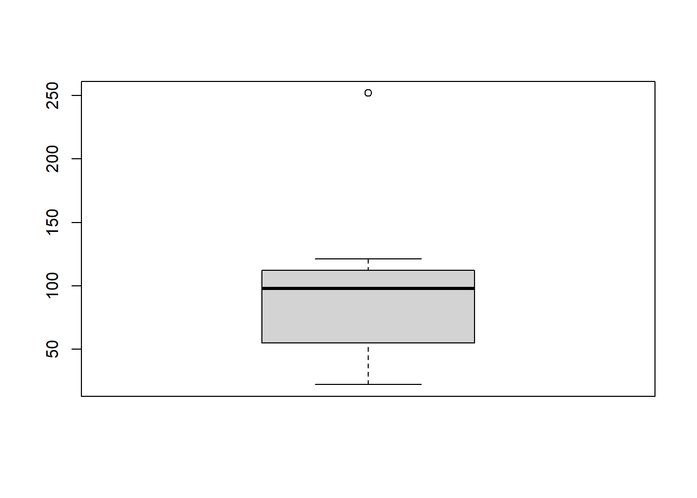

Estadística 101
Capítulo 1
Contenido: 6 videos
Parte 1
Parte 2
Parte 3
Parte 4
Parte 5
Parte 6
Comentarios
# a <- 1
# always write down your name and the date
#
# JLUF 09/12/2017
# add some general description to your script
# description: getting started with R and some descriptive stats
# always comment!
# always comment!
# always comment!
# let's get started with some basic stuffPaquetes
# R has some built-in functions like: mean (mean), standard deviation (sd) ... etc
# however, many time you will need to install packages
# you can do it by hand, o by typing "install.packages" like in:
# install.packages("foreign")
library(foreign)
# install.packages("Hmisc")
# install.packages("reshape") # uncomment this last one and try it, we will use it later
# next, in order to use the package or library type ...
# library(reshape) # uncomment this and try it
# we will use it later, and it will become clearerAsignación
# let's move on
# __
# /\ \
# / /\ \ assignment ----
# / /__\ \
# \/____\/
a <- 5
b <- 4
# a command line is usually composed of an object and a function
# they are usually separated by a "<-" (which means "created from")
# for instance you can create a dataset with the funtion "c", which means concatenate
# I'm going to create the object "metallica"
metallica <- c("Lars", "James", "Jason", "Kirk")
# this is a vector of characters
# or you can simply type
metallica## [1] "Lars" "James" "Jason" "Kirk"# the [1] means one row, which make sense because is a simple row vector
# you can check the type of data by using "class"
class(metallica)## [1] "character"# you can also check the structure of your data with "str"
str(metallica)## chr [1:4] "Lars" "James" "Jason" "Kirk"# in addition it tells you there are 4 elements
# this is also something you can check within the working space, under "Values"Indices
# __
# /\ \
# / /\ \ indexing ----
# / /__\ \
# \/____\/
# you can also check each element of the objects by using the square brackets
# for instance, the first element
# this is called indexing, and is very useful!
metallica[1]## [1] "Lars"# for instance, the second element
metallica[2]## [1] "James"# or, for instance, from the first to the second element
metallica[1:2]## [1] "Lars" "James"# you can also realize your list is wrong
# for instance Jason was an old member of the group but not now anymore
# we also use the square brackets, but instead of a number
# we tell R we want all element of metallica except Jason (this is the "!=")
# so to get ride of jason we do
metallica2 <- metallica[metallica != "Jason"]
# Eliminate 2+ elements
metallica3 <- metallica[-c(2,3)]
# we might also want to add a new member, for instance Rob
# we do this by concatenating the previous list with a new element
metallica4 <- c(metallica2, "Rob")
metallica_X <- c(metallica, "Rob") # Add at the end
metallica_Y <- c("Rob", metallica) # Add at the beginning
# Add in the middle
metallica <- c(metallica[1:2], "Rob", metallica[3:4])
# --- exercise ---
# create an object that represent your favorite band
####
# we can create variables of distinct types
# string variables
metallicaNames <- c("Lars", "James", "Kirk", "Rob")
# numeric variables
metallicaAges <- c(47, 47, 48, 46)
# Eliminate a column
metallica$Name <- NULL## Warning in metallica$Name <- NULL: Realizando coercion de LHD a una listaData frames
# __
# /\ \
# / /\ \ data frames ----
# / /__\ \
# \/____\/
# there are different type of data, among them vectors and data frames
# vectors can accomodate either numbers or characters
# data frames can accomodate different kind of data, like in boxes
# let's create a data frame
# we use the function "data.frame"
metallicaDataFrame <- data.frame(metallicaNames, metallicaAges)
# the name in each box is the name of the variable itself
# this happen by default
# but, you can change these names
# you can change this by using "colnames" which means column names
colnames(metallicaDataFrame) <- c("name", "age")
# or you can name it at the moment of creating the data frame
metallicaDataFrame2 <- data.frame(Name = metallicaNames, Age = metallicaAges)
# also check
str(metallicaDataFrame2)## 'data.frame': 4 obs. of 2 variables:
## $ Name: chr "Lars" "James" "Kirk" "Rob"
## $ Age : num 47 47 48 46# you can check there are 4 observations, for 2 variables: names and ages
# "Name" has become now a factor, R recognize this automatically
# We will see factors in detail later
# To access each variable we use the "$"
metallica$Name## NULLmetallica$Age## NULL# let's do some mathematical operations
# we can add more data by creating a new variable in the data frame
# and asigning it data, for instance, a data vector
metallicaDataFrame$childAge <- c(12, 12, 4, 6)
# we can calculate new variables from existing ones
metallicaDataFrame$fatherhoodAge <- metallicaDataFrame$age - metallicaDataFrame$childAge
# rename
colnames(metallicaDataFrame) <- c("A", "B", "C")
# we can also create a numeric vector using the function "rep"
vector1 <- c(rep(1,5), rep(2,5), rep(3,5))
# remember you can create a data frame with this data
new_df <- data.frame(vector1)
# there is also other functions like list" and "cbind" functions
metallica <- list(metallicaNames, metallicaAges)
metallica <- cbind(metallicaNames, metallicaAges)
# these are different kind of data
# a complete example for creating a dataframe is the next:
name <- c("Ben", "Martin","Andy","Paul", "Graham","Carina","Karina","Doug","Mark", "Zoe")
birth_date <- as.Date(c("1977-07-03", "1969-05-24", "1973-06-21", "1970-07-16", "1949-10-10", "1983-11-05", "1987-10-08", "1989-09-16", "1973-05-20", "1984-11-12"))
# the default date format is yyyy-mm-dd
job <- c(rep(1, 5), rep(2, 5)) # which is the same as job <- c(1,1,1,1,1,2,2,2,2,2)
# job is a categorial variable
# that can allows you for instance to check differences between lectures and students
# so far, this is just plain numbers with 1 indicating "lecturers" and 2 indicating "students"
# also "job" is so far a vector of numbers
# but you can convert it to a factor and give a name to the distinct levels of this factor
job <- factor(job, levels = c(1:2), labels = c("Lecturer", "Student"))
# putting all togetger
dataframe1 <- data.frame(name, birth_date, job)
# check it
dataframe1## name birth_date job
## 1 Ben 1977-07-03 Lecturer
## 2 Martin 1969-05-24 Lecturer
## 3 Andy 1973-06-21 Lecturer
## 4 Paul 1970-07-16 Lecturer
## 5 Graham 1949-10-10 Lecturer
## 6 Carina 1983-11-05 Student
## 7 Karina 1987-10-08 Student
## 8 Doug 1989-09-16 Student
## 9 Mark 1973-05-20 Student
## 10 Zoe 1984-11-12 Student# ---- exercise ----
# create a new data frame incorporating friends, alcohol, income and neurotic
dataframe1$friends <- c(5,2,0,4,1,10,12,15,12,17)
dataframe1$alcohol <- c(10,15,20,5,30,25,20,16,17,18)
dataframe1$income <- c(20000,40000,35000,22000,50000,5000,100,3000,10000,10)
dataframe1$neurotic <- c(10,17,14,13,21,7,13,9,14,13)Importación de datos
# __
# /\ \
# / /\ \ import data ----
# / /__\ \
# \/____\/
# however, most of the time we are going to import data
# whenever you work with imported data you will need to set the working directory
# set working directory
setwd("../data")
#setwd("C:/Users/Usuario/Documents/JoseLuis/UTalca_2018/Stats_101/course_2018/part2_how_to_use_R/1_data")
# getwd() this function allows you to see what is your current working directory,
# so, it allows you to check whether you set correctly (previous lines) your current directory,
# import data
dat2 <- read.delim(file = "facebook_friends_2.txt")
# in this case we noticed that the imported data will be wrong because the "header" is set to TRUE by default
# this is the same as:
dat2 <- read.delim("facebook_friends_2.txt", header = FALSE)
dat3 <- read.delim("facebook_friends_1.txt", header = FALSE)
colnames(dat3) <- c("friends")
# this means that some parameters such as "header" have values by default,
# in this case R assumes that the data has a "header"
# the 108 is out
# to correct this we tell R that there is no header, hence we put header equal to FALSE
# import data
dat2 <- read.delim("facebook_friends_2.txt")
dat3 <- read.csv("facebook_friends_1.csv", header = FALSE)
# checking the structure of the data you might realize this is a "data frame"
str(dat2)## 'data.frame': 11 obs. of 1 variable:
## $ CASAS: int 108 103 252 121 93 57 40 53 22 116 ...# this is a special data format that can accomodate data of different types in boxes: numeric, characters, etc
# let's do some descriptive stats
# let's see some centre of a distribution
# to visualize the mode () the score that occurs more frequently) we can do an histogram
hist(dat2$CASAS, 10)
# how to compute the median?
# we can sort the data
sort(dat2$CASAS)## [1] 22 40 53 57 93 98 103 108 116 121 252# seems there is an outlier, let's compare data with and without the outlier
dat3 <- dat2 # we copy the data
#OJO dat3$V1[3] <- NA # and we replace one value for an NA (NA stands for non available)
colnames(dat2) <- c("friendsNb") # rename header
hist(dat2$friendsNb, 10) # plot
dat2$friendsNb <- dat2[order(dat2$friendsNb),] # sort data
#OJO dat2$NUMEROS <- dat2[order(dat2$NUMEROS),] # sort data
# get ride of last value in a new dataframe
#dat2woOL <- data.frame(friendsNb = dat2$friendsNb[-length(dat2$friendsNb)])
summary(dat2$friendsNb) # descrip stats## Min. 1st Qu. Median Mean 3rd Qu. Max.
## 22.00 55.00 98.00 96.64 112.00 252.00#OJO summary(dat2woOL$friendsNb) # descrip stats
sum1 <- summary(dat2$friendsNb) # descrip stats
IQR(dat2$friendsNb)## [1] 57summary(dat2)## friendsNb
## Min. : 22.00
## 1st Qu.: 55.00
## Median : 98.00
## Mean : 96.64
## 3rd Qu.:112.00
## Max. :252.00summary(dat3)## CASAS
## Min. : 22.00
## 1st Qu.: 55.00
## Median : 98.00
## Mean : 96.64
## 3rd Qu.:112.00
## Max. :252.00# the median does not change a lot
# question: why use the mean instead of the median?
# let's look at some dipersion in the distribution of the data
# range
max(dat2) - min(dat2)## [1] 230# range
max(dat3, na.rm = TRUE) - min(dat3, na.rm = TRUE)## [1] 230errorstad <- sd(dat2$V1) / sqrt(length(dat2$V1))
# range is affected by extreme values, one workaorund would be excluding values at the extremes
# we cut off the top and bottom 25% of scores and compute the range of the middle 50% of scores, this is the 'interquartile range'
# first, we need to compute the quartiles
# But, we have already seen this data, remember summary??
summary(dat2)## friendsNb
## Min. : 22.00
## 1st Qu.: 55.00
## Median : 98.00
## Mean : 96.64
## 3rd Qu.:112.00
## Max. :252.00# if only we could funnel this data into a variable!!
# wait a minute... maybe somebody already do this? ...
# just find the right words, for instance type: "r save summary to data frame" in google!
summaryDat2 <- do.call(cbind, lapply(dat2, summary))
summaryDat2## friendsNb
## Min. 22.00000
## 1st Qu. 55.00000
## Median 98.00000
## Mean 96.63636
## 3rd Qu. 112.00000
## Max. 252.00000# compute the interquartile range
summaryDat2[5] - summaryDat2[2]## [1] 57# let's see this graphically!
boxplot(dat2)
# let's see this graphically!
boxplot(dat3)
# set directory
setwd("../data")
#setwd("C:/Users/Usuario/Documents/JoseLuis/UTalca_2018/Stats_UTalca/database_2020_DocPsychol")
library(reshape)##
## Attaching package: 'reshape'## The following object is masked from 'package:dplyr':
##
## rename# load data
satisfactionData <- read.delim("Honeymoon_Period.dat", header = TRUE)
# check data
head(satisfactionData)## Person Satisfaction_Base Satisfaction_6_Months Satisfaction_12_Months
## 1 1 6 6 5
## 2 2 7 7 8
## 3 3 4 6 2
## 4 4 6 9 4
## 5 5 6 7 6
## 6 6 5 10 4
## Satisfaction_18_Months Gender
## 1 2 0
## 2 4 1
## 3 2 1
## 4 1 0
## 5 6 0
## 6 2 1str(satisfactionData)## 'data.frame': 115 obs. of 6 variables:
## $ Person : int 1 2 3 4 5 6 7 8 9 10 ...
## $ Satisfaction_Base : int 6 7 4 6 6 5 6 2 10 10 ...
## $ Satisfaction_6_Months : int 6 7 6 9 7 10 6 5 9 10 ...
## $ Satisfaction_12_Months: int 5 8 2 4 6 4 4 4 5 10 ...
## $ Satisfaction_18_Months: int 2 4 2 1 6 2 2 NA 6 9 ...
## $ Gender : int 0 1 1 0 0 1 0 0 0 0 ...# __
# /\ \
# / /\ \ wide to long (stack) ----
# / /__\ \
# \/____\/
# using stack
# ex:
# newDataFrame <- stack(oldDataFrame, select = c(variable_list))
# here we stack relative to the "life satisfaction scores"
satisfactionStacked <- stack(satisfactionData,
select = c("Satisfaction_Base",
"Satisfaction_6_Months",
"Satisfaction_12_Months",
"Satisfaction_18_Months"))
# check it
head(satisfactionStacked)## values ind
## 1 6 Satisfaction_Base
## 2 7 Satisfaction_Base
## 3 4 Satisfaction_Base
## 4 6 Satisfaction_Base
## 5 6 Satisfaction_Base
## 6 5 Satisfaction_Basestr(satisfactionStacked)## 'data.frame': 460 obs. of 2 variables:
## $ values: int 6 7 4 6 6 5 6 2 10 10 ...
## $ ind : Factor w/ 4 levels "Satisfaction_Base",..: 1 1 1 1 1 1 1 1 1 1 ...# optionally we can change the name of the columns
colnames(satisfactionStacked) <- c("Values", "SatisfType")
# check it
head(satisfactionStacked)## Values SatisfType
## 1 6 Satisfaction_Base
## 2 7 Satisfaction_Base
## 3 4 Satisfaction_Base
## 4 6 Satisfaction_Base
## 5 6 Satisfaction_Base
## 6 5 Satisfaction_Basestr(satisfactionStacked)## 'data.frame': 460 obs. of 2 variables:
## $ Values : int 6 7 4 6 6 5 6 2 10 10 ...
## $ SatisfType: Factor w/ 4 levels "Satisfaction_Base",..: 1 1 1 1 1 1 1 1 1 1 ...# attention!!: we lose the info about "person" and "gender"
# __
# /\ \
# / /\ \ long to wide (unstack) ----
# / /__\ \
# \/____\/
# to reverse this procedure we can "unstack"
# simple unstack
satisfactionUnstacked <- unstack(satisfactionStacked)
# check it
head(satisfactionUnstacked)## Satisfaction_Base Satisfaction_6_Months Satisfaction_12_Months
## 1 6 6 5
## 2 7 7 8
## 3 4 6 2
## 4 6 9 4
## 5 6 7 6
## 6 5 10 4
## Satisfaction_18_Months
## 1 2
## 2 4
## 3 2
## 4 1
## 5 6
## 6 2str(satisfactionUnstacked)## 'data.frame': 115 obs. of 4 variables:
## $ Satisfaction_Base : int 6 7 4 6 6 5 6 2 10 10 ...
## $ Satisfaction_6_Months : int 6 7 6 9 7 10 6 5 9 10 ...
## $ Satisfaction_12_Months: int 5 8 2 4 6 4 4 4 5 10 ...
## $ Satisfaction_18_Months: int 2 4 2 1 6 2 2 NA 6 9 ...# or you can specify the name for the values themselves and for the name of the variables
# ex:
# newDataFrame <- unstack(oldDataFrame, scores ~ columns)
# scores: name of the variable containing your scores
# columns: name of the variable that indicates the variable to which the score belongs
satisfactionUnstacked2 <- unstack(satisfactionStacked,
Values ~ SatisfType)
# check it
head(satisfactionUnstacked2)## Satisfaction_Base Satisfaction_6_Months Satisfaction_12_Months
## 1 6 6 5
## 2 7 7 8
## 3 4 6 2
## 4 6 9 4
## 5 6 7 6
## 6 5 10 4
## Satisfaction_18_Months
## 1 2
## 2 4
## 3 2
## 4 1
## 5 6
## 6 2str(satisfactionUnstacked2)## 'data.frame': 115 obs. of 4 variables:
## $ Satisfaction_Base : int 6 7 4 6 6 5 6 2 10 10 ...
## $ Satisfaction_6_Months : int 6 7 6 9 7 10 6 5 9 10 ...
## $ Satisfaction_12_Months: int 5 8 2 4 6 4 4 4 5 10 ...
## $ Satisfaction_18_Months: int 2 4 2 1 6 2 2 NA 6 9 ...# __
# /\ \
# / /\ \ wide to long (melt) ----
# / /__\ \
# \/____\/
# melt
# ex:
# newDataFrame <- melt(oldDataFrame, id = c(constant_variables), measured = c(variables_that_change_across_columns))
# id: This option specifies any variables in the dataframe that do not vary over time, ex: person identifier (Person), and gender (Gender)
# id = c(Person, Gender)
# measured: This option specifies the variables that do vary over time or are repeated measures(i.e., scores within the same entity).
# In other words, it specifies the names of variables currently in different columns that you would like to be restructured so that they are in different rows.
# We have 4 columns that we want to restructure (Satisfaction_Base, Satisfaction_6_Months, Satisfaction_12_ Months, Satisfaction_18_Months).
# These can be specified as:
# measured = c("Satisfaction_Base", "Satisfaction_6_Months", "Satisfaction_12_Months", "Satisfaction_18_Months")
restructuredData <- melt(satisfactionData,
id = c("Person", "Gender"),
measured = c("Satisfaction_Base",
"Satisfaction_6_Months",
"Satisfaction_12_Months",
"Satisfaction_18_Months"))
# optionally we can change the name of the columns
colnames(restructuredData)[3:4] <- c("SatisfType", "Values")
# we can also reorder data
# datLongreorder <- datLong[order(datLong$Person),]
reorder2 <- restructuredData[order(restructuredData$Person),]
# check it
head(restructuredData)## Person Gender SatisfType Values
## 1 1 0 Satisfaction_Base 6
## 2 2 1 Satisfaction_Base 7
## 3 3 1 Satisfaction_Base 4
## 4 4 0 Satisfaction_Base 6
## 5 5 0 Satisfaction_Base 6
## 6 6 1 Satisfaction_Base 5str(restructuredData)## 'data.frame': 460 obs. of 4 variables:
## $ Person : int 1 2 3 4 5 6 7 8 9 10 ...
## $ Gender : int 0 1 1 0 0 1 0 0 0 0 ...
## $ SatisfType: Factor w/ 4 levels "Satisfaction_Base",..: 1 1 1 1 1 1 1 1 1 1 ...
## $ Values : int 6 7 4 6 6 5 6 2 10 10 ...# __
# /\ \
# / /\ \ long to wide (cast) ----
# / /__\ \
# \/____\/
# cast
# ex:
# newData <- cast(longData, variables_coded_within_a_single_column ~ variables_coded_across_many_columns, value = "outcome_variable")
wideData <- cast(restructuredData, Person + Gender ~ SatisfType, value = "Values")
# check it
head(wideData)## Person Gender Satisfaction_Base Satisfaction_6_Months Satisfaction_12_Months
## 1 1 0 6 6 5
## 2 2 1 7 7 8
## 3 3 1 4 6 2
## 4 4 0 6 9 4
## 5 5 0 6 7 6
## 6 6 1 5 10 4
## Satisfaction_18_Months
## 1 2
## 2 4
## 3 2
## 4 1
## 5 6
## 6 2str(wideData)## List of 6
## $ Person : int [1:115] 1 2 3 4 5 6 7 8 9 10 ...
## $ Gender : int [1:115] 0 1 1 0 0 1 0 0 0 0 ...
## $ Satisfaction_Base : int [1:115] 6 7 4 6 6 5 6 2 10 10 ...
## $ Satisfaction_6_Months : int [1:115] 6 7 6 9 7 10 6 5 9 10 ...
## $ Satisfaction_12_Months: int [1:115] 5 8 2 4 6 4 4 4 5 10 ...
## $ Satisfaction_18_Months: int [1:115] 2 4 2 1 6 2 2 NA 6 9 ...
## - attr(*, "row.names")= int [1:115] 1 2 3 4 5 6 7 8 9 10 ...
## - attr(*, "idvars")= chr [1:2] "Person" "Gender"
## - attr(*, "rdimnames")=List of 2
## ..$ :'data.frame': 115 obs. of 2 variables:
## .. ..$ Person: int [1:115] 1 2 3 4 5 6 7 8 9 10 ...
## .. ..$ Gender: int [1:115] 0 1 1 0 0 1 0 0 0 0 ...
## ..$ :'data.frame': 4 obs. of 1 variable:
## .. ..$ SatisfType: Factor w/ 4 levels "Satisfaction_Base",..: 1 2 3 4# END